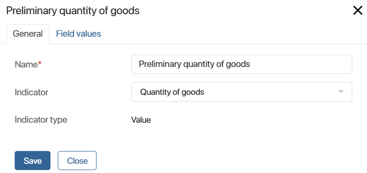

Use the Set Indicator’s Value activity to add a published indicator to a business process and get data on the performance of process instances.
On the process diagram, place the activity next to the step you want to analyze. For example, you can track:
- The number of task repetitions. Use the Counter type and place the activity before or after a step to determine how many times it is executed.
- Change of values in a variable. Use the Value type and place the activity before and after a step to record the preliminary and final values.
- Time interval between two steps. Use the Time Interval type and place the activity after a step to save the start and end dates. Use the Script activity to record values.
You can display the collected data on a separate page using the Chart widget. This way you can analyze the process performance and identify problematic steps.
For example, in the Finalize a deal process, a sales rep drafts the initial contract and specifies the number of goods. After discussing with the customer, this quantity might be adjusted. Using the indicator, you can track both the initial and final quantity of goods. This way, the chart shows how the number changes from the first draft to the finalized deal.
Начало внимание
Only users included in the Administrators group can customize the activity.
Конец внимание
Customize the Set Indicator’s Value activity
- Go to the business process designer.
- On the toolbar to the right of the flow chart page, open the System Elements tab.
- Drag the Set Indicator’s Value activity onto the process diagram and place it where you want to collect data on the execution of the process step.
- Double-click the added activity to open its settings window.
General tab
Use this tab to fill out general information about the activity:

- Name*. Enter the name of the activity. You can see it on the process diagram.
- Indicator. Select the indicator you want to collect data for on this process step.
- Indicator type. The field automatically shows the type of the selected indicator: Counter, Value, or Time Interval.
- Action. The field is available for the Counter type. You can use the activity to record:
- Counter increase. The number of process instances where the step is finished.
- Counter decrease. The number of process instances where the step is not started yet.
Field values tab
On the tab, you can choose which values to assign to the indicator's properties. This lets you save the results of the process instance and show them on the chart.
There are the following peculiarities when mapping the variables:
- The Value indicator. Map the Value system property to the process variable where you want to record the result to be tracked.
- The Time Interval indicator. Map its Interval start and Interval end system fields to the process variables where you want to record the required values.
- The Event author and Event time system properties are not mapped to variables, because the values in them are sent automatically as the process progresses. When customizing the chart, these properties can be added as filters for data search.
- Custom properties of the indicator. Map them to process variables or to one of the options of the Category type property if you have added it to the indicator context.
Use case for customizing field values
|
When the adjustments are complete, save and publish the process.
Once the process instances are executed, on the chart, you can see the data measured by the indicator.